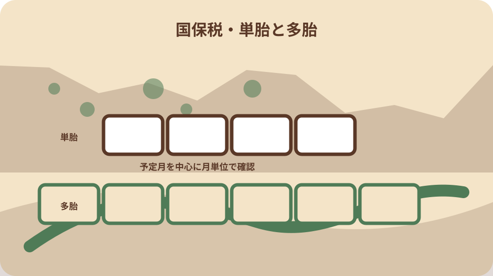
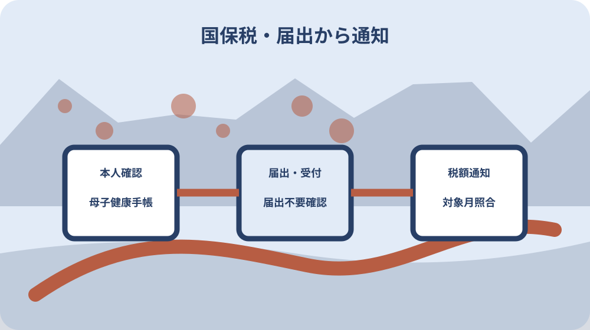

先に結論を確認する
この記事の答え：出産する本人の森町国保資格を確認し、単胎なら出産予定月または出産月の前月から四か月、多胎なら三か月前から六か月を一件表へ書き出します。所得割額と均等割額、届出資料、受付結果、税額通知を別欄で照合します。
森町で最初に照合する条件：森町国保の資格期間と免除対象月が重なるかを確認し、勤務先の健康保険や国民年金の産前産後免除と同じ制度として扱わない。
結論は出産月から免除対象月を一件表へ展開する
森町の国民健康保険へ加入する人が出産を予定しているとき、最初に作る成果物は、出産予定月を中央に置いた免除対象月の一件表です。単胎か多胎か、国保の資格期間、届出日、届出資料、税額通知の確認結果を同じ表の別欄へ置きます。
単胎では出産予定月または出産月の前月から四か月、多胎では三か月前から六か月が対象です。日数ではなく月単位の制度なので、予定日から産前何日という別制度の数え方を持ち込まず、対象となる年月を一つずつ書き出します。
この表の直接回答は、国保加入中の出産する本人を確定し、単胎または多胎の帯へ出産予定月を当て、所得割額と均等割額の対象月を並べ、届出後の税額通知で反映を確かめることです。世帯の納付月だけを丸で囲む方法ではありません。
この記事は出産育児一時金、国民年金、勤務先の健康保険、子どもの国保加入を一つの免除制度として扱いません。森町の産前産後国保税免除だけを一件表へまとめ、別制度は別の窓口・別の記録へ渡します。
一件表の左上には対象年度も置きます。出産予定月の前後が年度境界をまたぐとき、四か月または六か月の帯を年度ごとに切り捨てず、同じ案件番号のまま二年度へ渡します。どの年度の通知でどの月を確認したかが見えるため、年度替わりの未確認月を発見できます。
国保加入と出産した被保険者本人を最初に確かめる
対象は、森町国民健康保険に加入し、令和五年十一月以降に出産した人です。世帯主が納税義務者であっても、免除対象月を判定する起点は出産する被保険者本人なので、世帯主欄と出産被保険者欄を分けます。
妊娠八十五日以上の死産、流産、人工妊娠中絶も森町の対象説明に含まれます。家族が出生届の有無だけで対象外と決めず、該当する場合は本人の負担に配慮しながら、住民生活課国保年金係へ必要な確認方法を尋ねます。
国保へ加入した日や脱退した日が免除帯の途中にある場合は、帯全体を当然に免除済みとしません。資格確認書など手元の資格資料から加入期間を写し、対象月と重なる部分を町へ確認する質問に変えます。
勤務先の健康保険、被扶養者、国民年金第一号被保険者には、それぞれ別の産前産後制度があります。保険者名、制度名、問い合わせ先を一行ずつ分け、森町国保税の届出書へ別制度の結果を書き込まないようにします。
単胎四か月と多胎六か月を別の帯で描く
単胎の帯は、出産予定月の前月、予定月、翌月、翌々月という四枠で作ります。例えば九月が予定月なら八月から十一月までを候補として並べますが、最終確認は届出時の予定月または出産月と国保資格で行います。
多胎の帯は、出産予定月の三か月前、二か月前、前月、予定月、翌月、翌々月の六枠です。単胎の四枠を左右へ一枠ずつ伸ばすのではなく、開始が三か月前になる点を見出しと色で明示します。
一件表には『単胎・多胎の確認資料』『確認日』『確認した人』を添えます。予定時点では単胎として届出し、その後に多胎であることが分かったなど状況が変わった場合、古い帯を消さず、新しい確認日と町への連絡結果を別版として残します。
対象月の帯と実際の納期は別です。国保税の納付書や口座振替は期別で動くため、八月分が納付書の八月期と必ず一対一になるとは限りません。対象月と納付期を同じ欄へ書かず、税額通知で確認します。
月帯は暦どおりに連続させ、納付書に印字された期別番号を月名の代わりにしません。単胎・多胎の二段を同じ縮尺で並べれば、多胎では予定月より前の確認期間が長いことを家族も読み取れます。色だけに頼らず、開始月と終了月を文字でも示します。

予定日と実際の出産日を上書きせず並べる
出産前に届け出るときは出産予定月を使い、出産後に事実を確認したときは出産日も記録します。予定日が変わった場合は旧予定日を削除せず、医療機関の記載と町へ変更を伝えた日を並べます。
月末と月初をまたぐ予定変更では、免除帯が一か月ずれる可能性があります。家族の記憶だけで新しい月へ置き換えず、母子健康手帳の記載ページと森町へ伝えた内容を照合します。
実際の出産日が予定月と異なったとき、町がどの月を用いて更正するかを本人が断定しません。一件表の『予定月で作った帯』『出産後に確認した帯』『町の回答』を三段にし、差があれば通知確認へ送ります。
出産日を家族共有する際は、必要以上の医療情報を表へ集めません。制度の月判定に必要な出産予定月、出産月、単胎・多胎、確認資料名だけを残し、診療内容や経過は別の保護された記録で扱います。
所得割と均等割の免除を世帯全額と混同しない
森町が免除すると案内するのは、出産被保険者に賦課される国民健康保険税の所得割額と均等割額です。世帯全員分の国保税、平等割、すべての納付額が自動的にゼロになる制度だと書かないようにします。
国保税の総合案内では、世帯主が納税義務者となること、所得割や均等割などを組み合わせて算定することが示されています。一件表では納税義務者と免除対象の被保険者を別列にし、通知の宛名だけで対象者を判断しません。
所得割額と均等割額が全額免除される対象月でも、世帯の構成やほかの被保険者の税額は残り得ます。届出前の年税額から四か月分を単純に引き算せず、森町が更正した通知の内訳を確認します。
森町は、保険税額が賦課限度額に達している世帯では、産前産後免除を行っても税額が変わらない場合があると案内しています。税額が変わらないことだけで未処理と決めず、届出結果と計算上の理由を国保年金係へ確認します。
世帯の通知を読むときは、出産する本人の氏名が税額の宛名に出ない場合もあります。納税義務者の宛名、被保険者の内訳、対象年度を順に確認し、本人分の所得割・均等割がどこで反映されたか分からなければ、通知番号を用意して国保年金係へ尋ねます。
予定日の六か月前から届出資料をそろえる
森町では出産予定日の六か月前から手続できます。一件表へ予定日と六か月前の日付を書きますが、受付開始日を自己計算だけで確定せず、提出前に専用ページと国保年金係の最新案内を確認します。
早く届け出られることと、六か月前に必ず提出しなければならないことは同じではありません。妊娠経過や家庭の事情に合わせ、母子健康手帳の必要ページが確認できる時期と、郵送または窓口の準備日を別に置きます。
届出書は住民生活課国保年金係で受け取るか、森町の専用ページからダウンロードできます。ファイルを保存するときは取得日を付け、前年に保存した様式をそのまま印刷せず、提出時点のページにある様式かを確かめます。
作業欄は『様式取得』『本人確認書類』『母子健康手帳』『提出方法』『発送・受付』『税額通知』の六段階にします。書類がそろっただけで完了印を付けず、町で受け付けられたことと結果確認を別の状態にします。
出産予定日の六か月前より前に制度を知った場合は、早すぎる届出を送るのではなく、公式ページのURL、様式の取得予定日、母子健康手帳の確認箇所を準備欄へ置きます。受付可能日が来たらページを再確認し、保存済みの古い様式との差を見てから記入します。
本人確認書類と母子健康手帳の写しを分ける
森町が添付書類として挙げる一つ目は、運転免許証またはマイナンバーカードなど本人確認書類の写しです。家族全員の証明書をまとめてコピーせず、誰の本人確認に使う写しかを届出人欄と照合します。
二つ目は、母子健康手帳の表紙と出産予定日が記載されたページの写しです。表紙だけ、予定日のページだけではなく、町が示す二つの箇所を別チェックにし、文字が読める濃さかも提出前に確認します。
死産や流産など出生届で町が事実確認できない場合の資料は、本人の事情で異なり得ます。専用ページにない書類名を推測で用意せず、どの事実を示す資料が必要か、プライバシーに配慮した提出方法と合わせて係へ確認します。
郵送用の控えには、提出した届出書の版、添付したページ、発送日、宛先を残します。ただし本人確認書類の写しを無制限に複製せず、保管目的と廃棄時期を決め、不要な画像を家族の共有アプリへ置かないようにします。
提出・郵送・届出不要の可能性を確認する
提出先は森町役場住民生活課国保年金係で、専用ページには郵送先として周智郡森町森二一〇一番地一、郵便番号四三七－〇二九三が示されています。窓口へ行く場合も担当係名まで記録します。
郵送するときは到着日を自分で確定できないため、発送日、方法、控えの所在、町へ到着確認した日を分けます。医療上の事情や遠距離移動がある場合、無理に窓口持参へ固定せず、公式に示された郵送方法を選べます。
森町は免除を受けるには届出が必要としつつ、出生届などにより出産の事実を町で確認できた場合は届出不要となることがあると案内しています。『不要になることがある』を全員不要と読み替えず、自分の案件を確認します。
届出不要との回答を得た場合も、一件表へ回答日、担当係、町が確認できた事実、今後届く通知を記録します。口頭で不要と言われたことを家族の記憶だけに残さず、次に確認する税額通知まで工程をつなげます。
国保税の通知で対象月と更正結果を照合する
届出後は、免除帯に置いた各月と、森町から届く税額変更の通知を照合します。通知日、対象年度、納税義務者、出産被保険者、所得割・均等割の扱い、今後の納付額を一行ずつ写します。
免除対象月が年度をまたぐ場合、通知が一通で完結するとは限りません。年度ごとの国保資格と税額通知を分け、どの対象月がどの年度の通知で確認できたかを線で結びます。
すでに納めた額があるときは、自分で次の期へ充当したり口座振替を止めたりせず、還付、充当、今後の納付方法を通知と町の案内で確認します。表には金額だけでなく、町へ確認した処理名と日付を残します。
通知を見ても税額が変わらない場合は、賦課限度額の影響、国保資格期間、免除対象月、世帯の算定内訳という順で質問を整理します。制度が適用されたかと、最終税額が下がったかを別の判定欄にします。
税額通知の照合では、免除額を家計簿の入金として扱いません。変更前と変更後の年税額、今後の納付予定、還付や充当の有無を別々に記録します。口座振替の予定が残る場合は、停止を推測せず、町の通知に示された支払方法と金融機関の記録を確認します。

出生後の子の国保加入手続とは別案件にする
出産後に必要な子どもの国保加入は、生まれた子の資格を作る手続です。本稿の産前産後免除は、出産した被保険者本人の所得割額と均等割額を対象月について確認する手続なので、同じファイルへ混ぜません。
出生届、子どもの保険加入、こども医療費受給者証、出産育児一時金、国民年金の産前産後免除は、それぞれ対象者、窓口、期限、成果物が異なります。一件表の末尾に関連手続の名称だけ置き、詳細は各公式案内へ渡します。
出生届を出したため国保税免除の届出が不要になる場合があっても、子の国保加入まで自動で終わったとは判断しません。逆に子の加入手続を済ませても、出産被保険者の税額通知を確認せず完了にはしません。
家族の担当を分ける場合、免除届を担当する人、子の保険手続きを担当する人、税額通知を確認する人を明記します。原本の持出しや同じ書類の二重提出を避けるため、資料の保管場所と返却状況も付けます。
大石の視点：制度の事実と家族の照合方法を分ける
森町と国の資料から確認できる公的事実は、対象者、単胎四か月・多胎六か月、所得割額・均等割額、六か月前からの届出、添付資料、届出不要となる可能性です。これらを私の工夫と混ぜません。
私、大石浩之の実務提案は、出産予定月を中心に月の帯を描き、予定日版と出産後版を残し、届出資料と税額通知を一つの番号で結ぶ方法です。森町や厚生労働省がこの様式を指定しているわけではありません。
この提案の利点は、制度を知ったかどうかではなく、対象月、提出した資料、町の受付、通知の結果という四つの証拠を後から再確認できることです。税額を自分で計算する表ではなく、町の決定と手元資料の差を見つける表にします。
不明な欄は空白にせず『未確認』と書き、質問先と確認予定日を付けます。家族の推測で単胎・多胎、資格月、免除額を埋めるより、未確認を見える状態にして国保年金係へ一問ずつ渡す方が安全です。
確認日と未確認事項を残して一件表を閉じる
最終確認では、出産する本人の国保資格、出産予定月または出産月、単胎・多胎、免除帯、所得割・均等割、届出日、添付資料、受付結果、税額通知の九項目を上から読みます。
公式ページの更新日と閲覧日、届出書の版、町へ確認した日を残します。制度や様式が更新された場合は旧表を削除せず、新しい版の行を追加し、どの届出にどの案内を使ったか追跡できるようにします。
完了条件は、届出書を送ったことだけではありません。町での受付または届出不要の確認があり、対象月が整理され、税額通知で反映または税額不変の理由を確認し、次の納付方法を家族が理解した状態です。
確認後は本人確認書類の不要な写しを適切に処分し、母子健康手帳の原本を所定の場所へ戻します。一件表には保管場所と確認結果だけを残し、出産に関する機微な情報を必要以上に共有しないところまでを工程に含めます。
一件表を閉じた後も、追加通知や予定月変更の連絡が来たら同じ案件番号で再開します。完了日を消して作り直すのではなく、再開理由、受領資料、町への再確認、更新後の完了日を追記します。産前の届出から出産後の税額確認までが一続きの履歴になります。